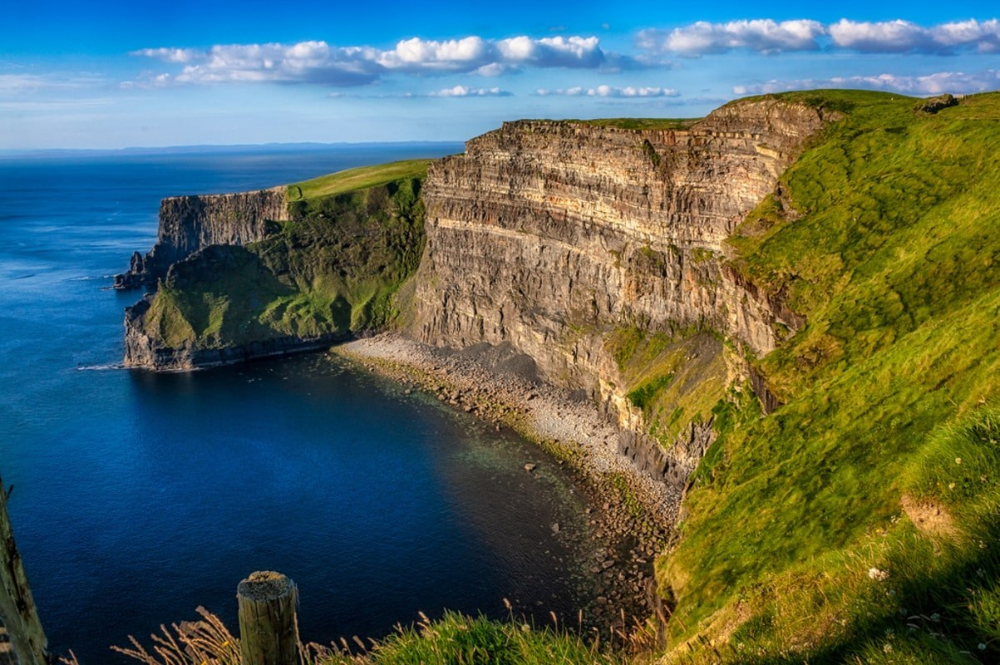
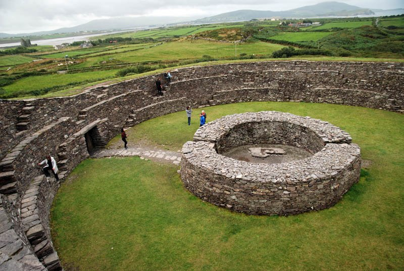
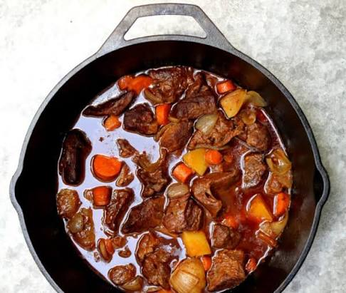
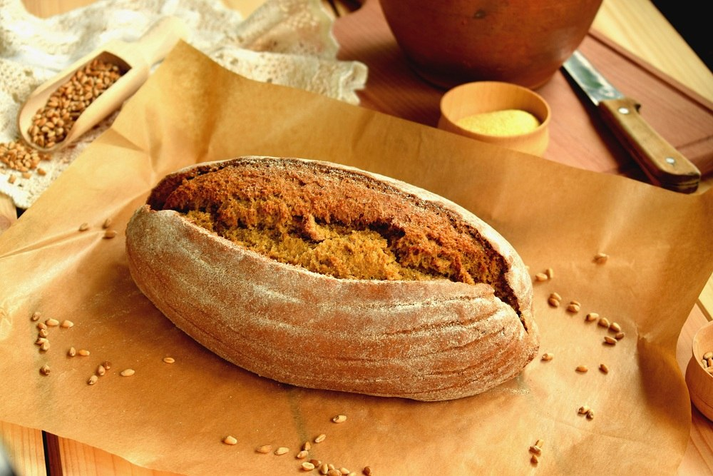
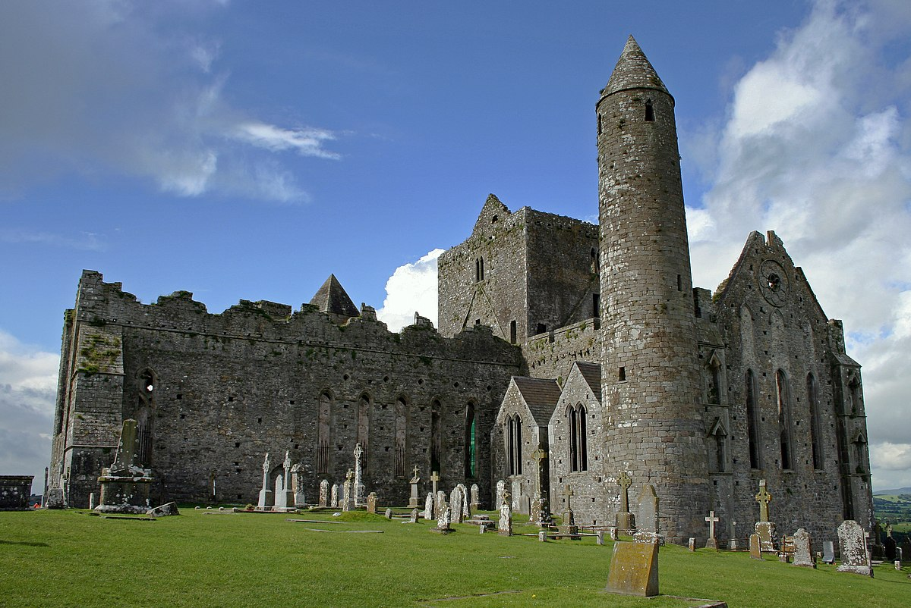
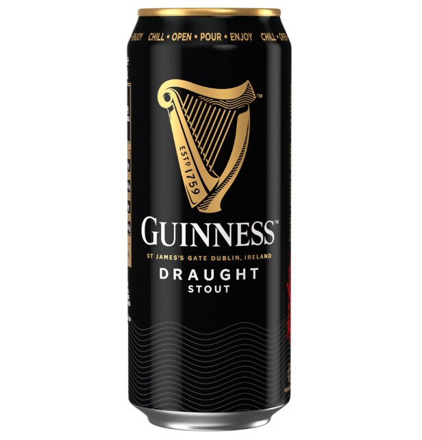
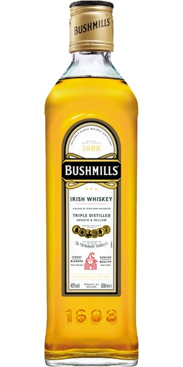

Визначні пам'ятки
Скелі Мохер (Cliffs of Moher)

Скелі Мохер (Cliffs of Moher) — це одна з найвідоміших та наймальовничіших природних пам'яток Ірландії, розташована на західному узбережжі графства Клер. Ці величні вертикальні стіни з вапняку та сланцю піднімаються на висоту до 214 метрів над дикими хвилями Атлантичного океану і тягнуться вздовж узбережжя приблизно на 14 кілометрів.
Кільце Керрі (Ring of Kerry)

Кільце Керрі в Ірландії — це знаменитий 179-кілометровий туристичний маршрут з мальовничими краєвидами на Атлантичний океан, зеленими пагорбами та національними парками.
Дублін та Триніті-коледж

Трініті-коледж — це найстаріший виш в Ірландії, заснований у 1592 році. Світлини кампусу демонструють дивовижне поєднання класичної георгіанської архітектури, величних бібліотечних залів та яскравого сучасного студентського життя у самому центрі Дубліна.
Дорога Гігантів (Giant's Causeway)

Дорога Гігантів (Giant's Causeway) — це унікальне природне утворення на північному сході Північної Ірландії, що складається з приблизно 40 000 щільно з'єднаних між собою базальтових колон.
Скеля Кашел (Rock of Cashel)

Скеля Кашел є однією з найбільш відвідуваних визначних пам'яток в Ірландії, також відома як скеля Святого Патріка. Замок, зведений у 4 столітті, був монаршою резиденцією провінцій південної Ірландії.
Кухня та гастрономія
Ірландська кухня — проста, ситна та комфортна. Основу традиційних страв складають яловичина, баранина, картопля, свіжі морепродукти й молочні продукти найвищої якості.
Ірландське рагу (Irish Stew)

Ірландське рагу (Irish stew) — це знаменита класична страва ірландської кухні, яка являє собою густу печеню з м'яса та овочів.
Содовий хліб (Soda Bread)

Содовий хліб — це традиційний швидкий бездріжджовий хліб, який готується на основі борошна, соди та кисломолочного продукту.
Черінг-бокс та морепродукти

Черінг-бокси з морепродуктами — це популярні гастрономічні набори для компаній, які містять асорті з риби, креветок, устриць та мідій.
Пиво Guinness

Легендарний темний стаут із густою кремовою пінкою, який найкраще смакує в автентичному ірландському пабі під живу музику.
Ірландське віскі

Знамениті бренди віскі (Jameson, Bushmills) та зігріваючий коктейль Irish Coffee (кава з віскі, цукром і вершками).
Культура та традиції
Ірландська культура — це унікальне поєднання стародавніх кельтських традицій, глибокої літературної спадщини та неймовірно теплої, відкритої душі місцевих жителів.
Особисті враження
Коли ти вперше ступаєш на ірландську землю, найбільше вражає нереальна насиченість барв: зелений колір пагорбів здається настільки яскравим, ніби його підсилили у графічному редакторі, а океан протилежно суворий та величний.